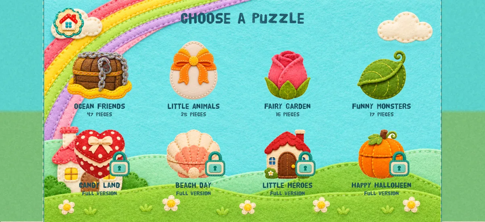

形合わせシーン
フェルトのキャラクターを対応するシルエットの上に置いて、シーンを少しずつ完成させます。
子ども向けパズルゲーム · iOS
小さな手で楽しめる、やさしいフェルトのパズルワールド。
Mini Funny Puzzles は、明るく楽しい新しいフェルト風デザインの子ども向けゲームです。形を合わせたり、カギを箱までドラッグしたり、メモリーカードで遊んだり、Ocean Friends、Little Animals、Fairy Garden などのやさしいシーンを楽しめます。
新デザインは近日公開 ↓
Mini Funny Puzzles について
現在の App Store ページでは以前のデザインが表示されています。ここで紹介している新しいフェルト版は現在準備中で、同じ App Store リンクで公開されます。
新しいアートディレクションにより、ゲームは明るい色、やさしい表情、わかりやすい形でいっぱいのフェルトのおもちゃ箱のような雰囲気になりました。子どもにも理解しやすい操作を保ちながら、より楽しく、より丁寧な見た目を目指しています。
フェルトのキャラクターを対応するシルエットの上に置いて、シーンを少しずつ完成させます。
Ocean Friends、Little Animals、Fairy Garden、Funny Monsters など、楽しいテーマを楽しめます。
カードをめくって、落ち着いたレイアウトの中でシンプルなペアを見つけます。
アプリ内課金や外部アクションは保護者エリアにまとめられています。
保護者エリアを開くには、ボタンを数秒間長押しする必要があります。




Mini Funny Puzzles は子ども向けに作られていますが、ストア関連の操作は保護者エリアで分けられています。完全版や追加コンテンツのためのオプションのアプリ内課金があり、開くには短い長押しが必要です。
Mini Funny Puzzles は現在、既存の「Amazing Mini Puzzles Boxes」の App Store ページから利用できます。今後のフェルト版リニューアルでも同じ App Store リンクが使われます。